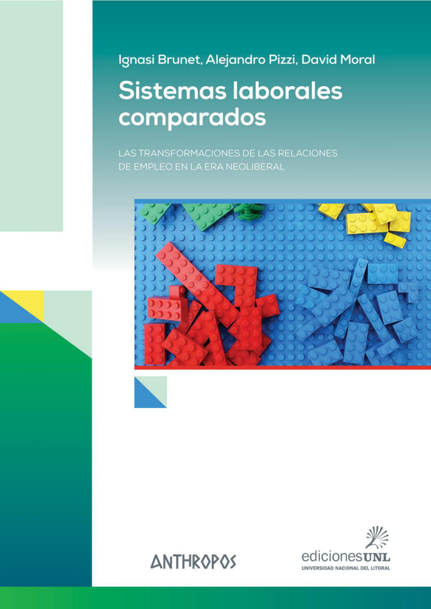

Cap. 1–2
- Capitalismo financiarizado
- Sociedad salarial y crisis de los 70-80
- Actores: Estado, sindicatos, empresas
- Método comparado

Brunet, Pizzi y Moral · Estructura del libro y los cinco modelos de relaciones laborales
← InicioPregunta que atraviesa todo el libro
¿Cómo se organizan las relaciones laborales según la combinación entre mercado, Estado y trabajo en cada región?
Arquitectura del libro
Patrón comparativo · Capítulos 3 al 7
Cinco familias
Eje temporal compartido
Capitalismo organizado
Primera gran crisis social
Hegemonía del capitalismo financiarizado
Para cerrar
No existen leyes económicas naturales: las relaciones laborales son construcciones hegemónicas, siempre en disputa.
¿Se están reestructurando los vínculos sociales para favorecer nuevos incentivos laborales en un capitalismo global más competitivo?
El método comparativo que inspiró este libro